Eyes on the Prize
Dashboard Visualization that Actually Works
Kevin Feasel (@feaselkl)http://CSmore.info/on/dashboards
Who Am I?


Here's a dashboard. What's wrong with it?
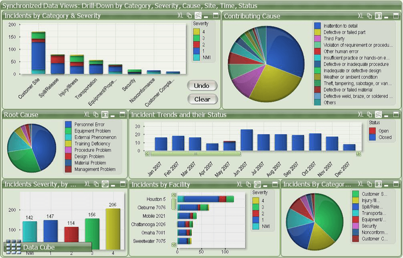
Something's wrong here.
You can feel it. Most people can.
By the end of this session, you'll be able to name every problem on that dashboard—and fix them.
The Thesis: An Emotional Response
A great dashboard evokes one of two emotions from its intended audience: happiness or anger.
If a dashboard evokes neither—if the response is indifference—it isn't working. Nobody will act on it.
What Is a Dashboard?
A single pane of glass that surfaces critical business or operational metrics at a glance:
- Key performance indicators (KPIs) are immediately apparent
- Related KPIs are grouped together logically
- Layouts stay consistent within and across related dashboards
“Dashboards are not an appropriate venue for artistic impression.” — Stephen Few
Operational Dashboards
Day-to-day data that helps line employees act. Purpose: drive action now. Flag when a process is "out of control" and help operators find the cause.
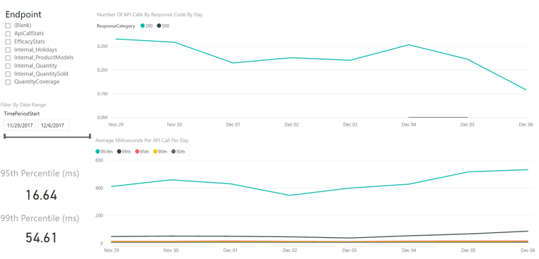
Strategic Dashboards
KPIs tracked periodically and displayed at an aggregated level. Purpose: track direction over time for leadership.
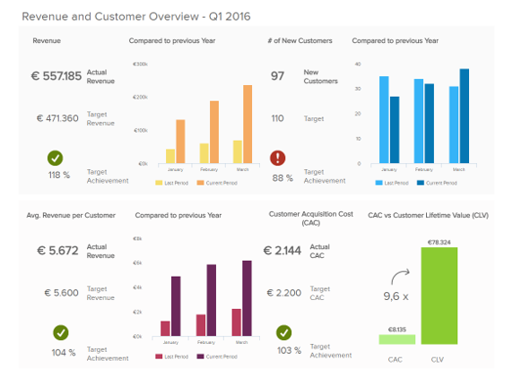
Tactical Dashboards
Strategic data shown at an almost-operational level. Purpose: bridge the two with enough detail to investigate and enough aggregation to see the trend.
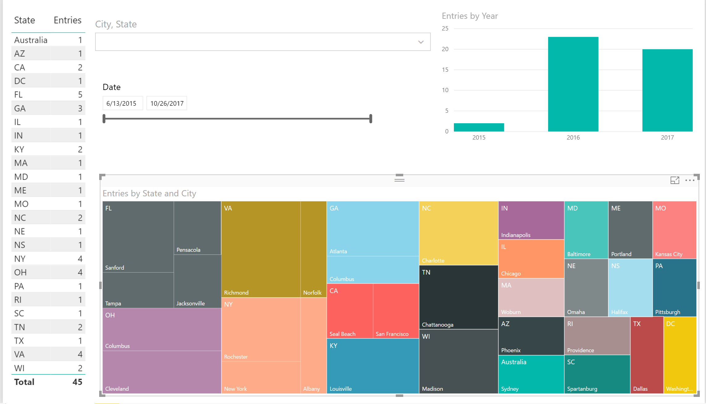
Know Your Audience
The single biggest driver of what belongs on a dashboard is who's looking at it. Ask:
- Who is the intended audience: operator, manager, C-level, board, the public?
- How will they use it, and what action should it drive?
- Are you showing the right measures, in the right way?
- What cultural differences (color meaning, scan direction) might matter?
Same Company, Different Audiences
Line operator
Real-time, granular, built to trigger an action this shift.
Executive
Aggregated, periodic, built to answer "are we on track?"
Same underlying data. Put the operator's dashboard in front of the board and you'll get indifference.
Right Measures, Right Way
A sales dashboard shows pipeline stages, likelihood to close, and sales-vs-quota versus server uptime or net margin. Match every measure to what the audience can actually act on.
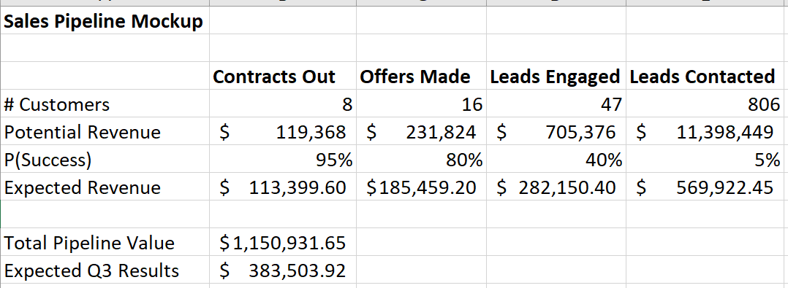
Visualizing the pipeline for a VP
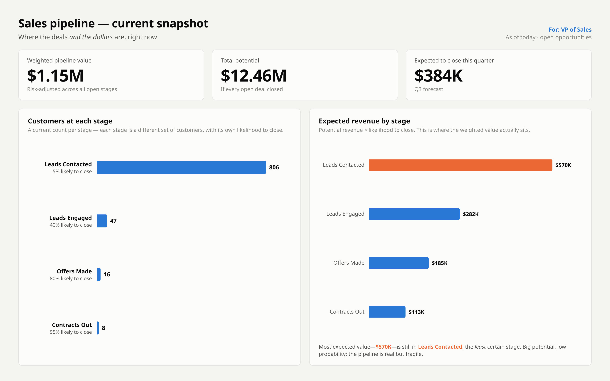
Culture Changes the Meaning
Color and scan direction aren't universal. In the West, red means danger (and negative values in finance). In China, red has historically meant prosperity: gifts of money come in red envelopes.
The takeaway: your audience's cultural background shapes how they read your colors and scan your layout. Test your assumptions rather than inheriting them.
Visual Principles
Five principles turn "I don't like it" into "here's the fix":
- Cognitive Load
- Less Is More
- Where the Eye Looks
- Glanceability
- Color Vision Deficiency
Cognitive Load
Working memory holds roughly 3–7 items at once. Think of working memory as CPU registers and long-term memory as RAM: we shuttle information between them, and the registers are tiny.
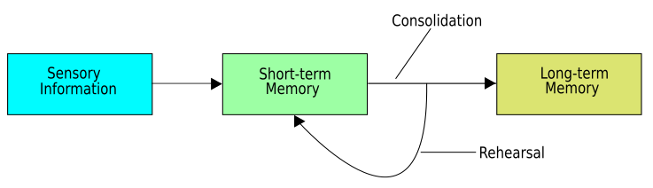
Cognitive Load
So design to reduce mental load:
- Let people group things using pre-attentive attributes like size, shape, orientation, thickness, color.
- Remove "noise" that distracts or adds load without adding meaning.
- Make the visuals tell one coherent story.
Less Is More
Start with a cluttered dashboard.
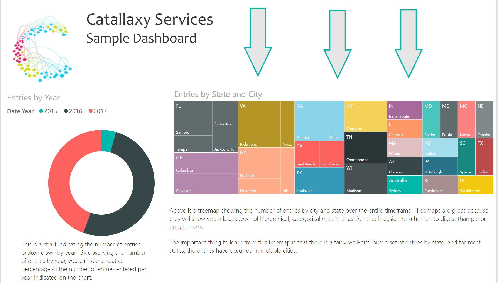
Less Is More: Remove the Clutter
Focus on data by removing chrome (logo, company name, arrows) and unnecessary text.
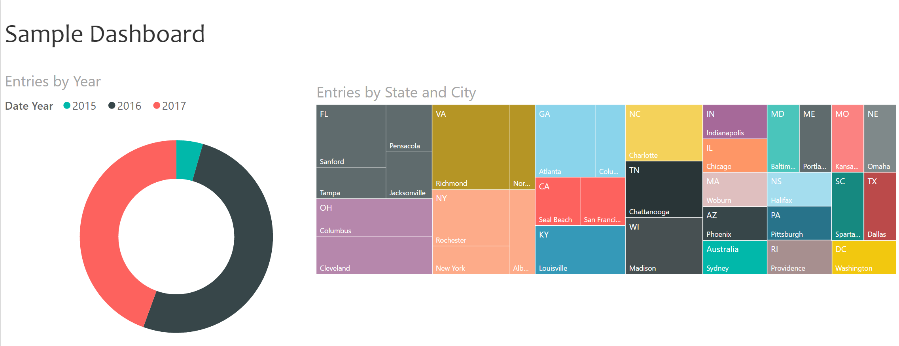
Less Is More: Drop the Legend
Label values directly, and the legend—which forces the eye to bounce back and forth—disappears entirely.
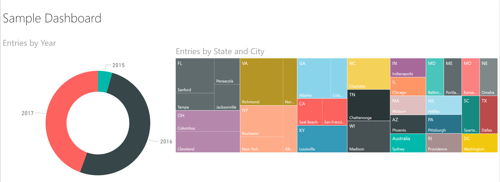
Less Is More: Reduce Color
Keep color limited, consistent, and meaningful. Here color is doing nothing but adding load.
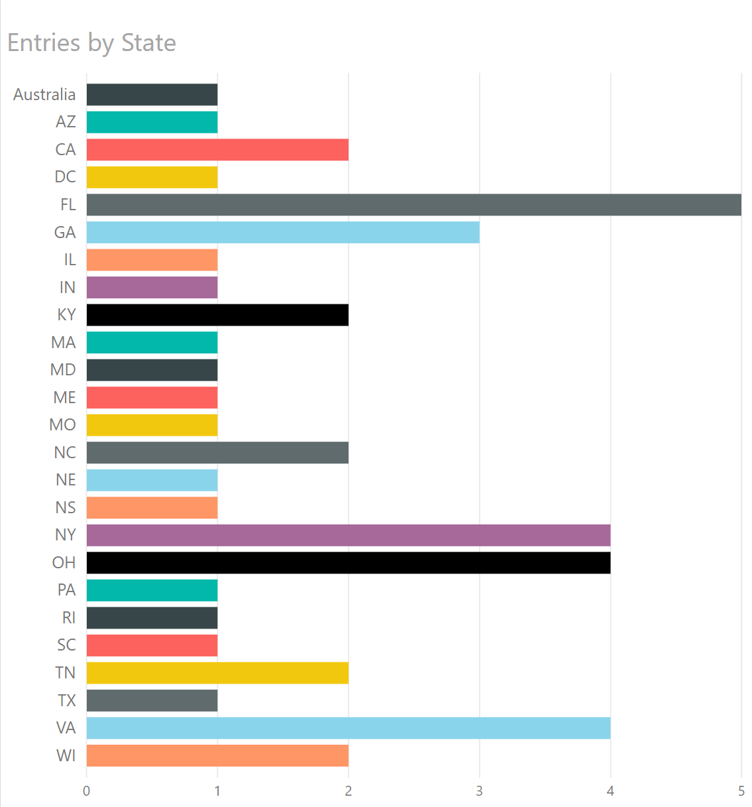
Less Is More: Fewer Colors
Removing color shows that we've lost nothing because color wasn't carrying information.
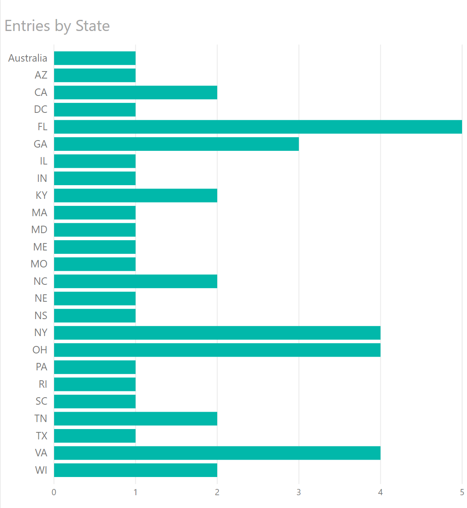
Less Is More: Color as a Signal
Now that color is scarce, one splash of it highlights a single value, letting our eyes pick up on the important information immediately.
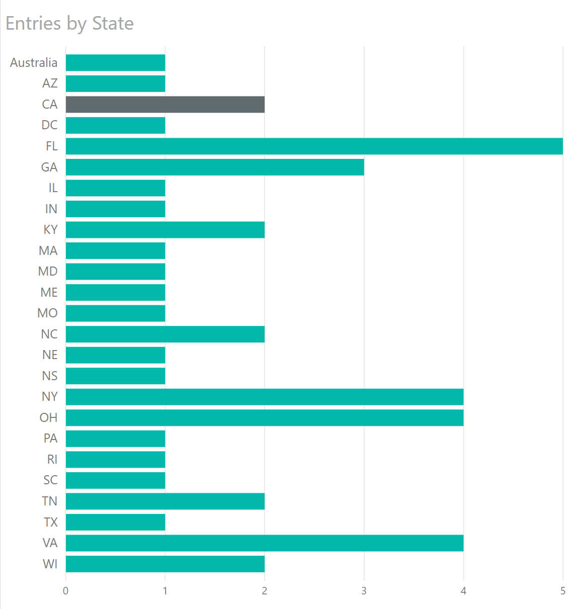
Color Is Associative
People link the same color across a view. Swap what a color means between two charts and you quietly break their mental model.
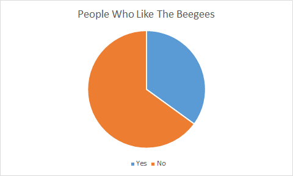
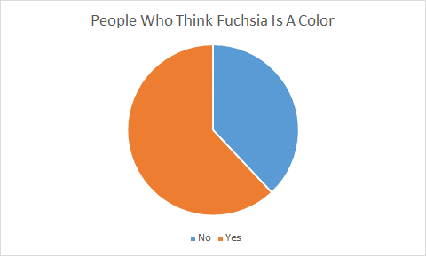
3D Pains
Humans can't read precise measurements off a 3D chart. For bar and column charts, 3D never helps.
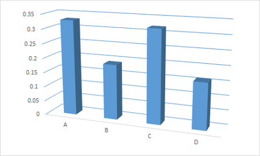
Where the Eye Looks
Reading habits set scan direction: left-to-right and top-to-bottom for Western readers, right-to-left or top-to-bottom for others. However your audience reads, that's how they'll scan your dashboard.
Put the most important thing where their eyes land first.
Layout Patterns
For text-heavy, evenly distributed content, the eye follows predictable paths, such as the Gutenberg, Z, and F patterns:
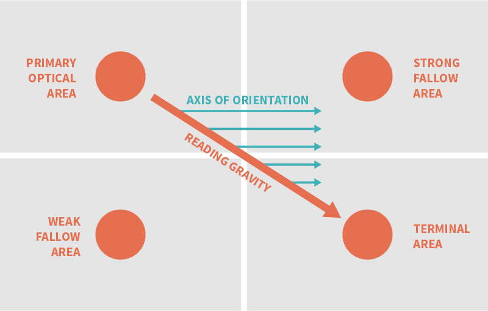
Gutenberg
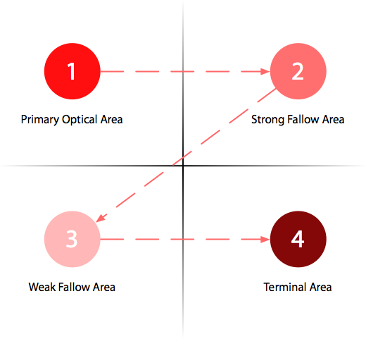
Z
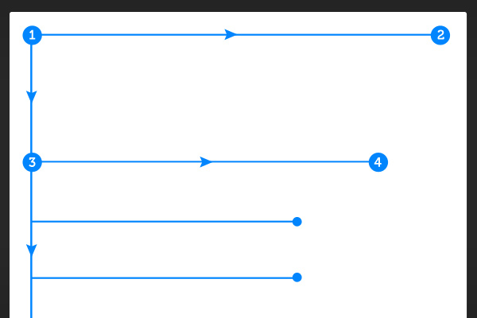
F
Focal Points
Image-heavy dashboards don't follow those tidy paths. Instead the eye jumps to focal points. The biggest, brightest, most contrasting element wins first.
Focal Points
The Rule of Thirds
Borrowed from photography: put the important elements on the thirds lines. It applies to dashboards too.
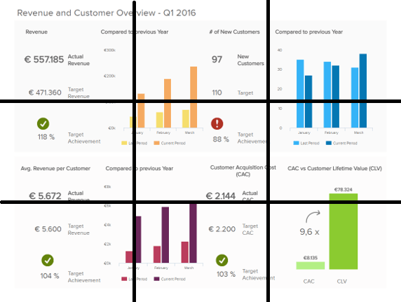
Glanceability: The 5-Second Test
Can someone get the key message in five seconds? If not, it fails. Things that help:
- A clear purpose behind every metric shown
- No scrolling; group related metrics into clear sections
- Consistent layouts and decisions
- Large fonts, rounded numbers—easy to read from across a room
Color Vision Deficiency
The Badlands, as seen by drone:
Color Vision Deficiency
The Badlands, with protanopia:
Color Vision Deficiency
The Badlands, with deuteranopia:
Color Vision Deficiency
The Badlands, with tritanopia:
Color Vision Deficiency
Remember the old SSIS? Green means success and red means failure, but for a chunk of your audience, those two are hard to distinguish:
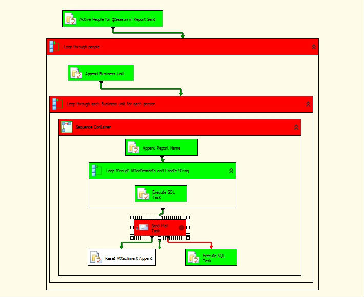
Full color
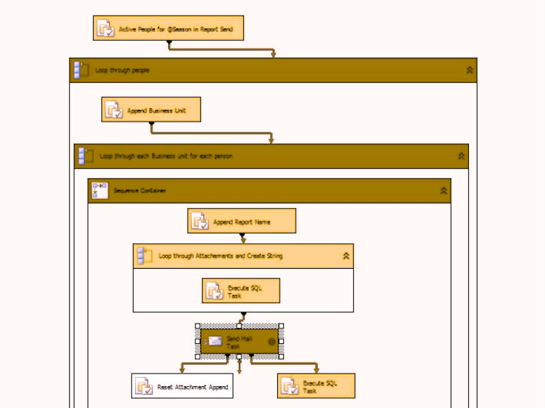
Deuteranopia
Color Vision Deficiency: Fixes
- Use color-safe palettes
- Use grayscale for images (also helps when printed)
- Use color sparingly and consistently
- Add patterns in addition to color to distinguish elements
- Simulate CVD with a tool like Coblis
Chart Crimes
The wrong chart is a self-inflicted wound. Let's cover some chart crimes and a few I'll actually defend.
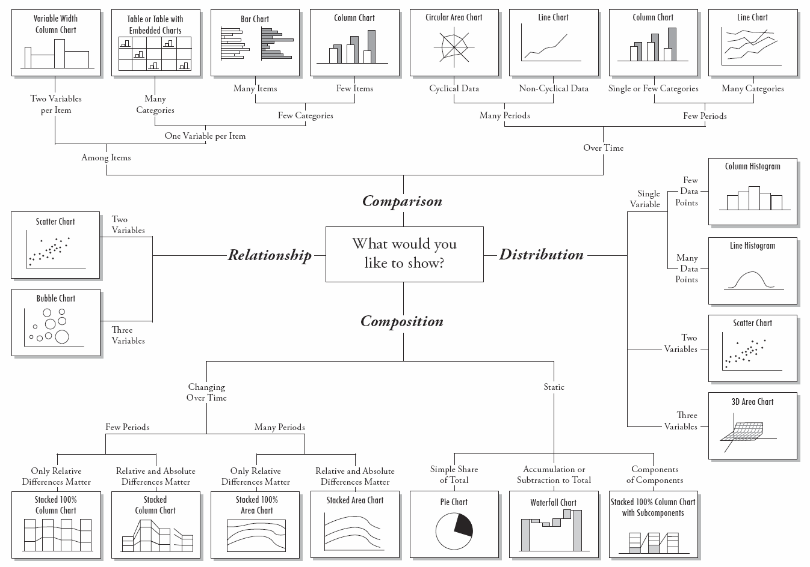
Bar vs. Column
Choose a bar chart if:
- Category names are lengthy
- You have a lot of categories
- You have relatively few periods (ideally 1)
Choose a column chart if:
- Viewing across periods matters
- You have many periods with few categories
- Category names are short
Crime: Bars That Don't Start at Zero
Bar and column charts must start at the origin. Truncate the axis and you turn a small difference into a dramatic lie.
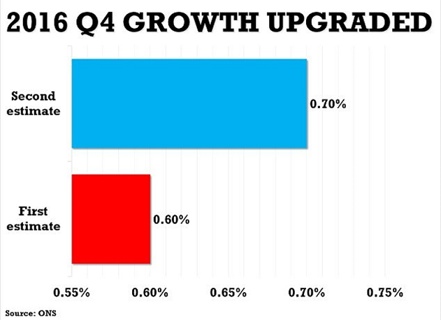
Lines: The 45-Degree Rule
Bars start at zero, but line charts and dot plots don't have to. Cleveland, McGill & McGill showed we read a line's slope most accurately when the average slope is about 45 degrees. That's why it's fine for a line chart to start above zero: aim for that slope and the trend becomes readable instead of misleading.
The Underrated Gem: Cleveland Dot Plots
Named after Bill Cleveland, dot plots provide an enormous amount of information in a tiny footprint.
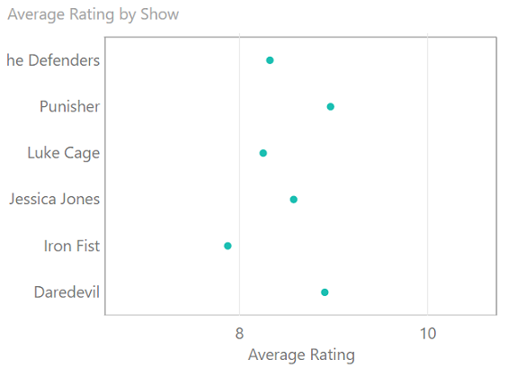
Crime: Pie Charts
Best good(?) use: a simple share of a single static total.
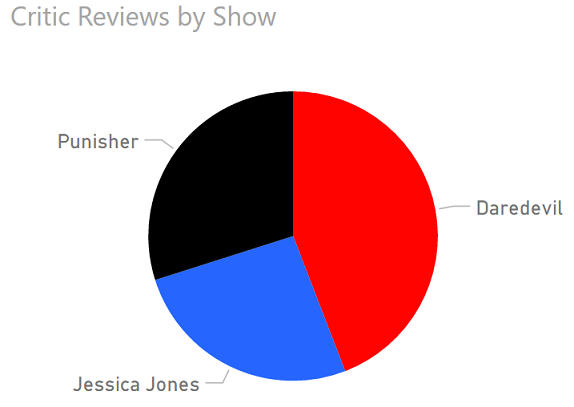
Why We Hate Pie Charts
- Angle differences are hard to discern
- Small percentages are hard to differentiate
- They almost always need a legend
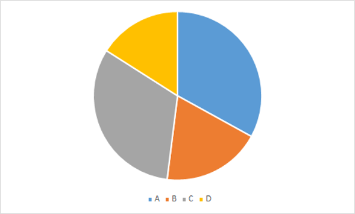
Pie Chart Alternatives
- A column chart for comparing a few categories
- A treemap for comparing many
- Or just the numbers: 58% – 42%
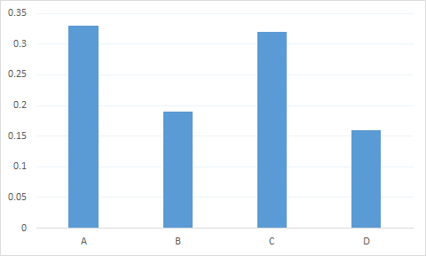
In Fairness: Pie Charts I Like
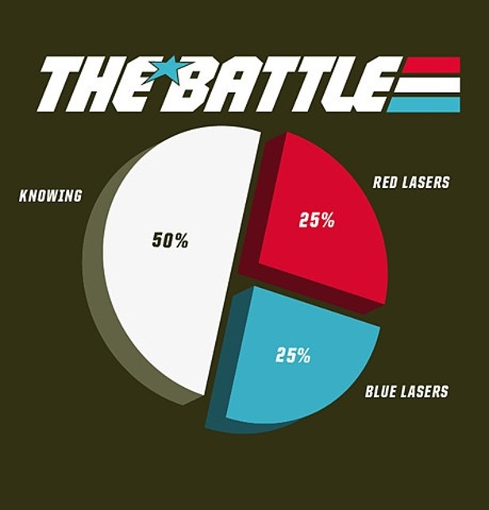
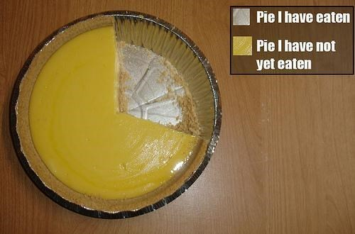
Crime: Gauges Without a Goal
Gauges are fine if they show progress toward a target or an intuitive status. A gauge with no goal is just a number wearing a costume.
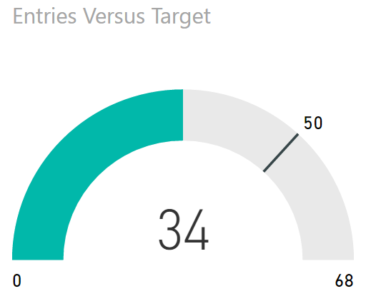
With a goal — useful
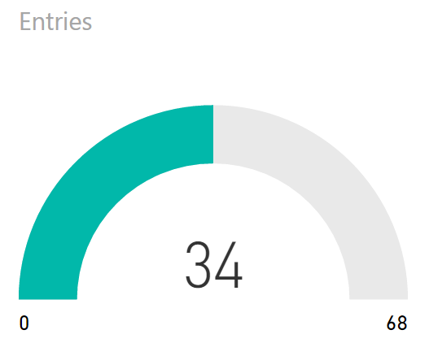
Without a goal — noise
Crime: Stacked Area Charts
Best case: relative and absolute change over a few periods. But look again: what can you actually read for sure? Only the top line and the bottom category. Every middle band floats on a shifting baseline.
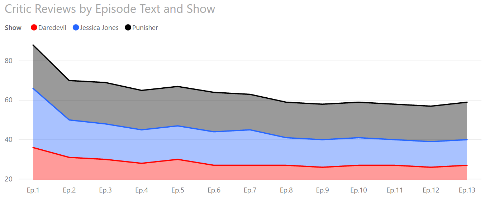
Stacked Area: The Fix
A line chart shows each category clearly against a fixed baseline. The trade-off: you compute the total yourself if you want it shown.
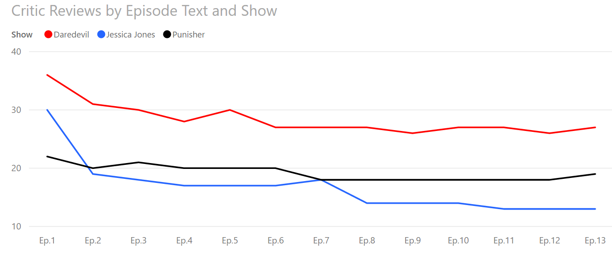
Radar Charts (A Soft Spot)
My fondness for radar charts is entirely due to Madden NFL franchise mode. They're genuinely useful for comparing a handful of attributes across a few entities.
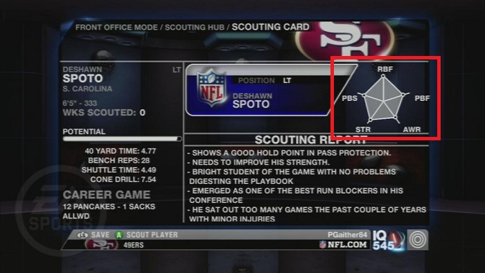
Everything Else: A Reference Card
These all have their place. Choose the right one for the job:
- Table / matrix: when users must compare exact values (tactical/operational, not strategic)
- Column: few categories, many periods | Bar: many categories, few periods
- Line: time series over many periods, few categories
- Line + column: two related but distinct variables (price & volume)
- Scatterplot: relationship between two variables | Bubble: add a third (carefully)
- Treemap: share of a whole across many hierarchical categories
Back to the Scene of the Crime
Charge 1: Pie Charts
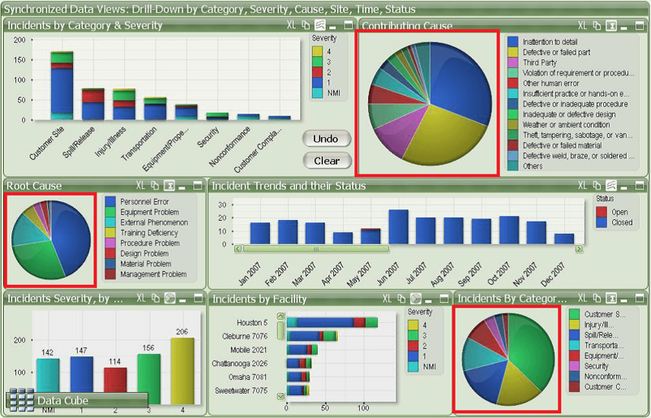
Charge 2: Too Many Colors
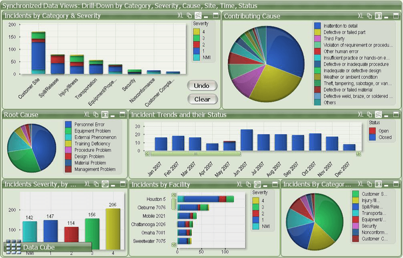
Charge 3: Unnecessary 3D

Charge 4: Category Overload
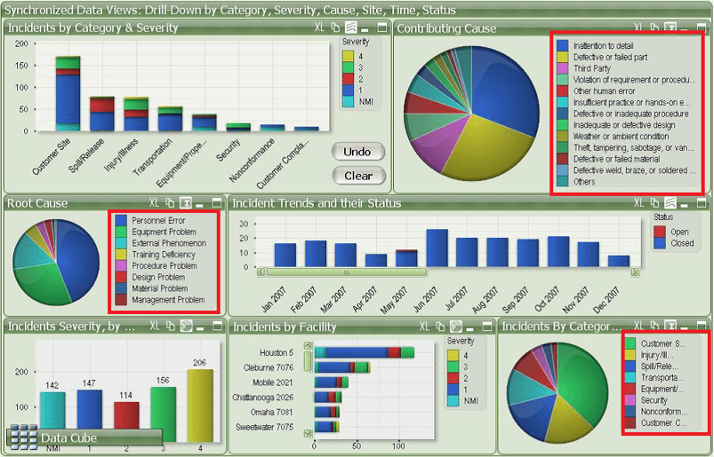
Charge 5: Scroll Bars
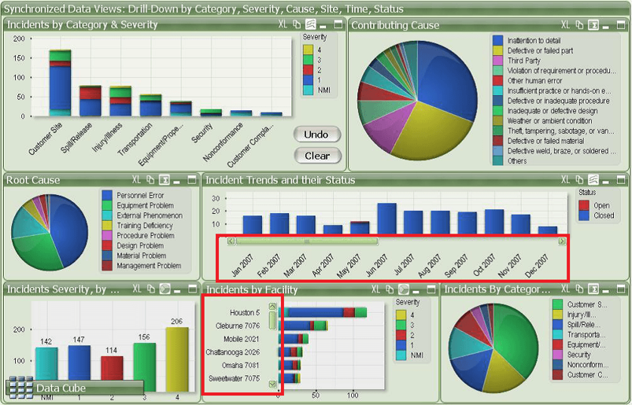
Charge 6: Improper Color Reuse
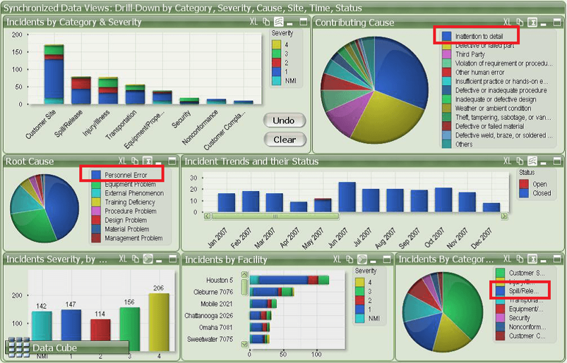
Charge 7: Unnecessary Chrome
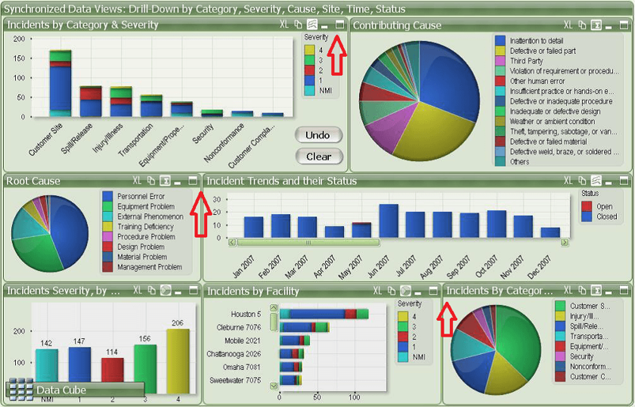
The real charge: no audience
It tried to be everything to everyone, so it's nothing to anyone.
Built for the site manager
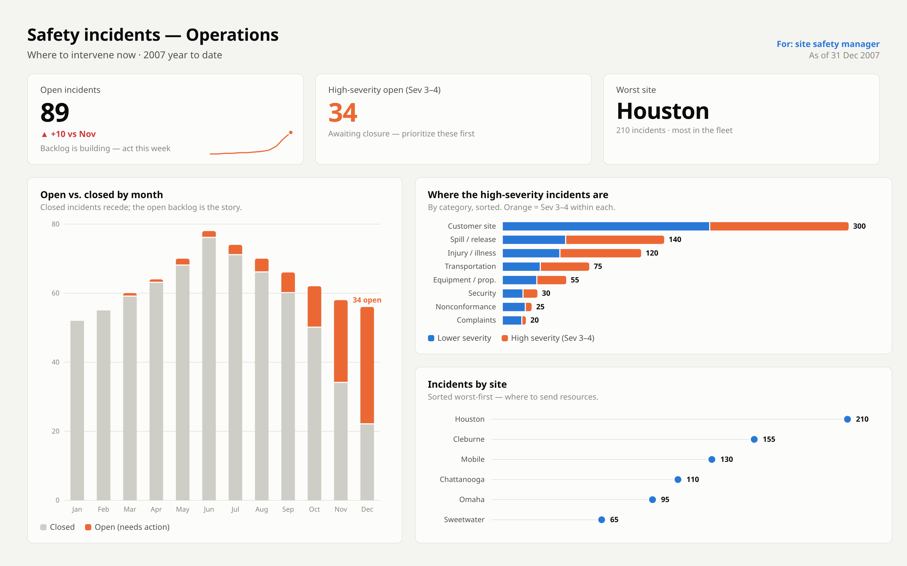
Built for the executive
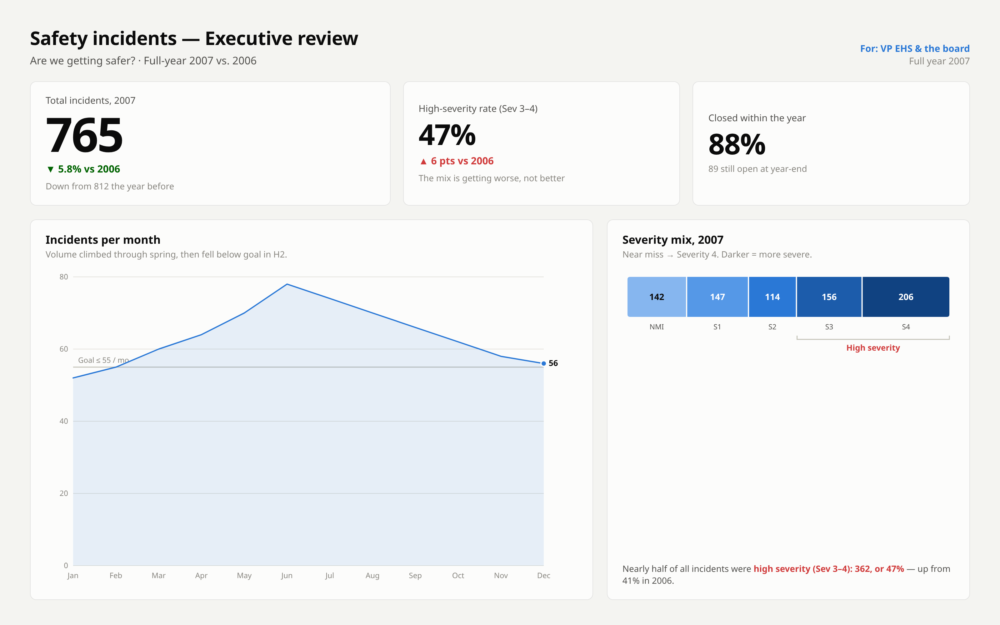
The difference between a dashboard people tolerate
and one they use…
…is whether it makes them feel anything.
Wrapping Up
To learn more, go here:
https://CSmore.info/on/dashboards
And for help, contact me:
feasel@catallaxyservices.com | @feaselkl
Catallaxy Services consulting:
https://CSmore.info/on/contact